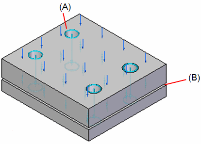
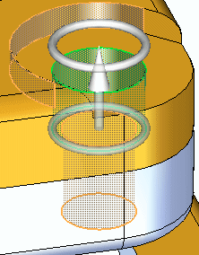
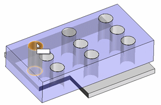
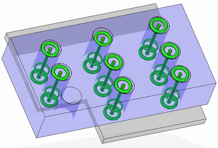
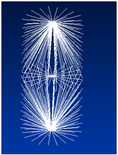

Bolt connectors
For practice using bolt connectors, try the Tutorial: Using bolted connections.
When to use Bolt connectors
Bolt connectors transfer tensile, bending, and thermal loads from one part to another.
You can use the Simulation tab→Connectors group→Bolt command  to simulate bolted connections between two part faces, without having to model the
fastener itself.
to simulate bolted connections between two part faces, without having to model the
fastener itself.
You can use the Bolt command to simulate:
-
Bolts with and without nuts.
-
Bolts of a different material than the bolted material.
-
Prestressed bolts.
-
Holes that penetrate and holes that do not penetrate.
-
Holes of all shapes—simple, tapered, flat bottom, V bottom, threaded—as well as cylindrical cutouts.
-
When the model contains two parts with holes but no bolt hardware, you can combine bolt simulations with no penetration contact connectors.
Example:Use the Bolt command to create bolt connectors (A).
Use the No Penetration Contact connector (B) to prevent two plates from penetrating.

You can use the Bolt command with both 2D and 3D meshes.
Using the Bolt connector command
Most of the information required to create a bolt connector is inferred from the elements you select. If your 3D model contains bolts and other fasteners, you can hide them in PathFinder and just use the part holes to generate the bolt connectors in the FEA model. Selecting holes rather than modeled bolt components yields a much faster processing time for meshing and solving.
If you select a hole, the software determines the connected parts by finding cylindrical holes along a shared axis in other parts. The top and bottom faces are determined from the connected face(s) at either end of the hole. The type of bolt defaults to no-press fit. The diameter of the head and nut are calculated from the diameter of the selected hole.

The Bolt connector command uses the Bolt command bar to specify bolt connector creation options.
-
You can use the Plane option on the Bolt Type list to specify that you want to select one hole, yet create bolted connections for all eligible holes on the same plane.


-
You can use the Multiple Bolts option
 to control how the Bolt Connector nodes are created in the Simulation pane. If your part has many holes of the same size, you can select this option to
generate a single node, Bolt Connection 1, that represents all of the holes. This makes it easy to edit all of the bolt connectors
at once.
to control how the Bolt Connector nodes are created in the Simulation pane. If your part has many holes of the same size, you can select this option to
generate a single node, Bolt Connection 1, that represents all of the holes. This makes it easy to edit all of the bolt connectors
at once. -
To create a rigid element at the location where two holes meet, use the Spider option .
Bolt simulation elements
The bolt connector simulation substitutes rigid line elements for the head, nut, and stud of a fastener. The bolt simulation elements that are generated during meshing are the following:
-
Beam—A single rigid element that uses a cylindrical cross section to represent the bolt or stud.
-
Spider—A series of rigid line elements that represent the head and nut in a web-like fashion.
The spider connects the ends of the beam to the elements in your model.

The spider transfers the loads to the stud. The head and nut bending and stiffness are simulated by the line elements.
How do I
Create connectors based on assembly relationshipsCreate assembly connectors using the Auto command
Create manual connections between faces or surfaces
Replace target and source connection regions
Change connector region direction
Create bolted connections
Edit a bolt connector
Learn more
Assembly connectorsTarget and source connector regions
Assembly connector handles, labels, and symbols
Glue and no penetration contact connectors
Thermal connectors
Bolt connector simulation results
Look up more details
Auto command barAssembly Connector command bar
Assembly Connector Properties dialog box
Bolt command bar